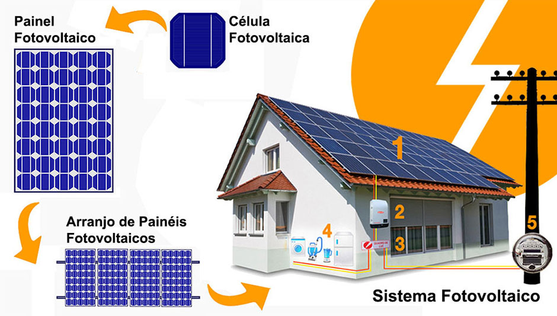
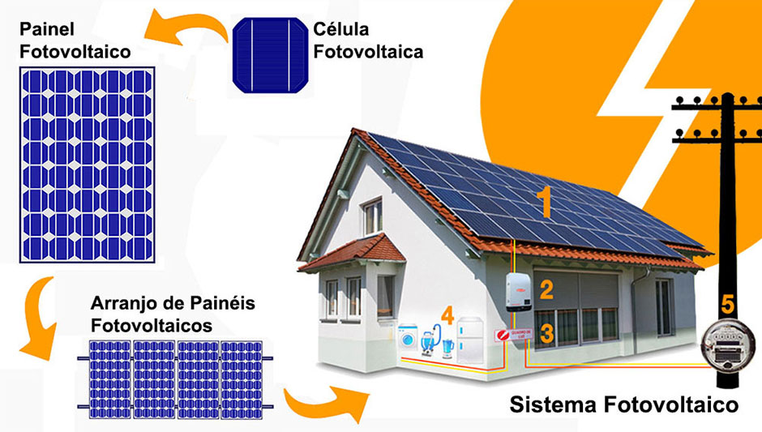

O sulfeto de chumbo (PbS) é um composto inorgânico formado por chumbo e enxofre. É um sólido escuro, com brilho metálico, insolúvel em água e tóxico devido ao chumbo.
Agora responda o quiz:
Sobre a ligação química predominante no sulfeto de chumbo (PbS), é correto afirmar que:
Tente novamente
Correto!
Explicação:
O sulfeto de chumbo (PbS) é formado por um metal (chumbo) e um não metal (enxofre).
O chumbo perde elétrons e vira Pb²⁺, enquanto o enxofre ganha elétrons e vira S²⁻.
Essa transferência de elétrons caracteriza uma ligação iônica entre os dois íons.
Qual sua principal utilidade?
Tente novamente
Correto!
Explicação:
O PbS é um semicondutor, ou seja, conduz eletricidade em certas condições.
Por isso, é usado em sensores infravermelhos (como câmeras térmicas e controles remotos) e em células fotovoltaicas (que geram energia a partir da luz).
 

Qual destes é o nome do mineral cujo nome químico é sulfeto de chumbo?
Tente novamente
Certo!
Explicação:
Principal minério de onde se extrai o chumbo, é natural, sendo encontrado em depósitos geológicos, especialmente em rochas calcárias.